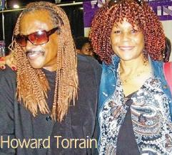

Human Hair Extensions for All Nationalities for 35+ Years
The Hair Story by The Hair Genie
Wigs, Extensions, Weaves, Quick weaves, Hair pieces, Drawstring ponytails, 3/4 wigs, Fusion, Hand-sewn weaves, Interlocking, Snap-in Tracks, What do all of these items have in common? They are all hair enhancements! Why? Because all of these products and/or methods are used to make your own natural hair look longer and/or fuller. A few people are fortunate enough to know how to do this certain magic with no specific training. Others, however, must seek the services of professionals. Some even call these professionals magicians. In the earlier days, professional beauticians jokingly derided us by referred to us as "Kitchen-Ticians" (Why Kitchen Technicians? Because hair weaving was not done in a salon, it was done exclusively in the privacy of the home, usually the kitchen. You would be amazed at how much fake hair you see every day and never know it. It's everywhere now. If you are interested in any kind of hair enhancement - whether you are seeking to have them for your self or entertaining the idea of entering the industry as aprofessional - this website was designed to provide you with the information you will need to help you make an informed decision. First, let us understand the origin of this unique industry.
The Origin of Hair Weaving
The hair enhancing technology that has come to be known as hair weaving and extensions started on the Southside of Chicago in the late 1950's, to the best of my knowledge. Until 2002 hair weaving/extensions was one of the best-kept secrets in America, and remained the private domain of African-American women for a number of years. Then came "Ambush Make-overs" in 2002, until then this practice was way undercover, yet it had already spread like wildfire amoung certain ladies. Hair weaving proliferated in urban markets amoung African-American ladies across the US, Africa and the Carribean, even certian South American countries where African were taken as slaves. These hair weaves were usually performed by non-professionals in their kitchens. These quasi-professionals never advertised their services, yet they always had clients. The earliest history I could find regarding hair weaving goes back to when Ms. Georgia Mae Norris began practicing pole weaving. It is rumored that she was taught by the famous Christina. One of the most established methods todya is called "The Christine Method" which is taught mostly through Bronner Brothers Internaitonal, here in Atlanta. This method really does involve "weaving" with a weaving loom and poles. The hair came in a big ball - it was called bulk hair - and had to be drawn and hackled before it could be applied. The technicians had to make the wefts for this hair on a weaving loom. This method was originally called pole weaving. Pole weaving was to become synonymous with a lady previously mentioned known only as Ms. Christina. Pole weaving would become known as "The Christina Method Both the hair and the workmanship for this method were of outstanding quality. The hair and the weave would last for months - or until the tracks were removed by a professional. Today this method is rarely used. Few people know how to weave on a loom, or are interested in learning. However, I had never heard of Ms. Christina. I discovered ways to enhance my soft, curly, fine and uncontrollable hair for myself - and out of desperation This picture of me was taken in 1962. Yeah! That's me, but... That is not my own hair; the hair you see in that photo came from a doll. Like many others before and after me, I considered myself fortunate to be leaving the south and heading for Gary, Indiana. Yet, at the tender age of twelve, and while living still in my native mining camp village in Northern Alabama, I had discovered how to enhance my own ponytail. By cutting the hair from the doll's head into thin strips with plastic scalp still attached, I could just wrap these strips around the base of my own pitiful ponytail and turn my "rooster tail" onto a real ponytail. I didn't have the nerve to wear it to school in my small town. Nevertheless, I knew how to do it and I couldn't wait to get to Gary and show off my fine new ponytail. For the first time in my life, I felt like I looked like the other girls, the ones with the big thick Oprah Winfrey or Whoopi Goldberg-type of ponytails and braids. My time in Gary was short, soon, I was off to Windy City. In 1958, I met my best friend, Julia. We are still best friends today. It seemed that the boy she liked, liked me. So we ended up in a fight. During our fight she managed to dis-lodge my "phony tail". She was shocked when it came off in her hand. We both began to laugh hysterically. I had no choice, so I told her about my magic. She was amazed and immediately interested in knowing how I did it, so I showed her. Together, we quickly realized that not only could we make ponytails by taking hair from dolls, but we could also sew this doll's hair right onto our own heads! This was accomplished by French braiding (cornrowing) our hair, and attaching the doll's hair using a needle and thread. This lasted for weeks. Only one problem, I couldn't braid hair, but Julia could. This was the beginning of my "Sew Real" hair enhancements technique. Using this method, we actually created the look you see in my photo. This is the same method used in today's Sew-Ins. And yes, that is doll hair! Note: Please understand, we did not know how to cut hair back then. Check out the cut! My cutting skills have improved significantly since then. Though It wasn't a popular saying back then, I must say I felt like, "I had it going on", for sure! No one ever suspected a thing. Back in Chicago, no one, at my new school, knew that it was not my hair. For the first time in my life, I felt glamourous. You have to understand that, back at this time, things were very different when it came to African-American hair. Straightening combs could not help me because of my mixed-race hair. There were no chemical straighteners at that time. There was only a hot comb which did not work for my hair. When chemicals did come on the scene, I could not use them either, due to the texture, and fragility of my hair. My desperation for something different was because my hair could not maintain it's straightness so it was impossible to style. I have worn hair enhancements all of my life and I am eager to share my skills with any lady who feels the need to enhance her hair. I know how empowering it is to feel glamorous. Going back to the story, back then, there were no hair or beauty supply stores that sold hair. Thank God that this was to be a time of change in America.
Big Changes in Black Hair Care
African-American ladies were beginning their escape from the kitchens and cotton fields, and trying to break into the real job market, the movies, music, and other forms of entertainment. They all had the same problem though; and it was a big problem: what to do about the hair? Even with the new civil rights legislation of the middle '60s, the doors to the American Dream wasn't exactly open to African-American women. These ladies were still having a hard time fitting certain images. You see, it was all about the hair, and they had to find a way to tame it or get around it. There were very few products on the open market for the glamorization of African hair. Madame C. J. Walker, an African-American woman, had invented the straightening comb. However, not much else had been done to help with typical African-American hair. A hot comb and some Dixie Peach Pomade or Blue Bergamont just wasn't enough to change the texture of this hair; except temporarily. Even if it did work for you, the hair quickly reverted at the first sign of moisture. This was not the answer. However, a change was on the way. By the '60s, and before the arrival of the Asians, there came the hair ladies in major cities with large Black populations (mainly Chicago, New York, and St. Louis). They began importing very high-quality human hair into these cities. This was genuine 100% human hair, and it was sold by weight, ounces, pounds and kilograms, and at a premium price. Because there was no distribution network, finding this hair was like looking for illegal substances (drugs). The only ones who had access to this genuine human hair were industry insiders so you needed a connection. If you were fortunate, you could find one at a black hair show. The original hair weaves were very expensive, averaging $500 to $750 per application. It was usually a 24-hour process. Hackling, and other additional preparations, took hours to complete. With these prices, only entertainers, successful models and actresses, as well as other people of means, were able to afford hair weaving. Notice old photos of African-American ladies, especially in entertainment. They all wore wigs or some other form of hair enhancements. You rarely saw the natural hair of most of these ladies: entertainers like Diana Ross, Tina Turner, Diahann Carroll, Aretha Franklin, Chaka Kahn, etc.
Because of the demanding schedules of entertainers, and the many time- saving advantages of the "Christina Method", this method was very popular among these ladies, who had to look glamorous without a lot of maintenance. However, this method was largely out-of-reach for the everyday woman because of the expense involved. In addition, this hair was invariably European and did not really match the African texture, notice my hair in the picture. Nevertheless, more changes were on the way.
Big Breakthroughs in African-American Hair Enhancements
Three things happened in the early sixties to help African-Americans with their hair dilemma:
The emergence of hair care products, such as cream relaxers and hair moisturizers, designed specifically for African-American hair by companies such as Johnson Products, out of Chicago.
Imported Yaky Hair from Korean refugees and Chinese manufacturers.
Hair adhesives for weaving and bonding became affordable to the mainstream in the form of cheap glues.
The Koreans brought the Yaky,and caused the development of a completely different market. That was the beginning of Pay Day Hair. Animal hair is easier to get and cost a lot less than human hair. This new resource meant that human hair became cheap and easily accessible in the African-American communities throughout the United States. Not only was animal hair very affordable, it really did match the African hair texture. This is the reason that, to this day, any hair that matches the texture of relaxed African-American hair is referred to as "Yaky".
However, it came with an awful smell. Honestly, the smell of this Yak hair could gag a maggot, especially when it was wet and/or unclean. Today, the term no longer has anything to do with any animal, or that awful, musty odor. Today's cheap imported hair is actual human hair; however, it is of the poorest quality, as is reflected in the price and the way it is marketed.
The introduction of cheap hair and low-cost glue, combined with the ingenuity and creativeness of the African-American female, made hair weave available and affordable for anyone who wanted it. It also resulted in two very different types of hair enhancement clients.
The Two Different Types of Hair Enhancement Clients
The Payday Client The busy Professional The "Payday" Client: This client is usually younger and less financially stable. Many did their own quick weaves or employed the services of girlfriends and relatives to glue in the cheap hair. You see, gluing required no particular skill so it made it possible for just about anyone to do what needed to be done! Many salon stylists quickly got into the game once they saw the profit potential for this type of service. If the "Payday" client decided to go to a salon, these clients usually requested tracks. These tracks could cost as little as five dollars. However, they never cost more than $10 to 20, even in the most upscale salons. This method presented the recipient with an endless cycle of pulling out tracks, removing glue from your hair (which is never easy), constantly buying new hair, and then finding a way to put in.the new tracks! In fact, one could pick up a ten-dollar pack of hair, along with a bottle of glue, get a girlfriend to "hook them up", and be in the club, with their new hair, within an hour. This method is known as bonding. It was quick, easy, and, most of all, affordable for anyone. It only took about $12.00, and about 15 to 20 minutes,and you're good to go! For many young ladies, this became as time-consuming as a part-time job. For most of these young women, this quickly became a twice-a-month ritual: Every Payday! It was, and still is, a ritual filled with uncertainty and risk because you never knew exactly what to expect because these track-gluing stylists usually had little or no training. There was no school, or any other place, where one could learn these types of skills. Cheap hair made extensions available to anyone, and a lot of women are suffering from hair loss because of this. In some cases, this has resulted in permanent hair loss, often referred to as Alopecia. However, the demand still remains very high, whether you are skilled or not.
Payday Hair is still a BIG hit!
The Busy Professional: Career workers and business women still preferred the hand-sewn method because this method lasted for months and traditionally required a better grade of fake hair. There was no damage and most experienced a noticeable increase in hair growth. Those who did try the new Yaky hair discovered that it resulted in a tangled, unmanageable and unholy mess after just a few days. This new source of hair came with many problems, and most upscale ladies found the bonding method unacceptable. To this day, most seasoned and sophisticated "Glamour Girls" continue to seek out a good hand-sewn enhancement done with good quality human hair. These ladies know that the hand-sewn method, coupled with the high quality hair, saves them both time and money. These women continue to be willing to pay a premium for this superior service. Howard TorrainFusion (In-Fusion/In-fusion-ment) and Howard Torrain Webster defines Fusion as follows: the act of blending, or the state of being blended throughout; a state of being blended or melted togehter.Today, we are seeing more frequent use of glue. It is no longer called bonding; it has a new name: fusion. This method is also known as "Strand by Strand." The term Strand by Strand and Fusion were introduced to the hair care industry by Howard Torrain (pictured left with Genie). Today he is known in the industry simply as "Torrain." Torrain is also known for his relentless efforts to establish and maintain a color code based on numbers for all human hair sales. Fusion is a process whereby extension hair is added to your own hair using an adhesive. The adhesive used is usually hot glue. This method is used frequently today, mostly on those who people who have little or no knowledge of the industry usually seeking hair extensions for the first time. It is often sold as being superior to all other methods. Acutally, the truth behind the popularity of this method boils down to these three reasons: Most people can't braid. Those who provide this service are either new to the industry or seeking to make a lot of money quick. Fusion is much fater and easier than hand-sewn. However, it costs considerably more money. As a result, we are seeing more hair loss than before. These Fusion/glue/adhesive methods are very popular amongst the very young - especially those who cannot afford a real hand-sewn attachment, or those who are unaware of the damaging consequences of mixing adhesives and human hair Fusion is only good for temporary styles or for those who like a lot of variety and change hairdos frequently. Fusion is also very useful in special event "fantasy hair" hairdos and other temporary applications. However, it is not recommended for continuing and repeated usage. Prolonged use of this "bonding method" or any kind of adhesive can and will usually result in damage to your own natural hair and scalp. Let me make this very clear, glue and hair is NOT a good idea unless the hairdo is temporary. Even then, the proper solvent must be used to remove the glue from the hair, be aware removing the hair can/will result in some hair loss. People with fine, thin, or damaged hair should NEVER have this procedure. The number one question my educated clients ask me is "Will it damage my hair?" My response: YES! Think about it. How are you going to get it out without pulling your own hair out if your hair is fused to the extension hair? LA Hair Extensions will be happy to accomodate you, if you prefer this method. However, we take no responsibility for the health of your hair. Mr. Torrain came up with this method sometime in the mid 70s. It was supposed to be the only way to "weave" European hair, due to the slippery nature of the hair's texture. They were not aware of The Hair Genie's "Sew Real" Hair Enhancements for All Nationalities.
Hand-Tied/Hand-Sewn Weaving (Sew-In)
This method is performed just as the name says: it is sewn in with a needle and thread. However, before you decide on this method, understand there are many different ways this is done. Most practitioners have no professional training in this area. Everyone seems to have their own method. There are two methods that are most popular. The Circle Weave Method
With this method, all of the client's hair is braided in cornrows beginning at the base of the skull in the nape area. A continuous braid (cornrow) circles around and around the head, collecting more and more hair as it grows larger. This ends on the top of the head in a large lump. This lump is usually highly visible, and gives the appearance of a small hubcap on the top of the head. The head does not have a natural shape and 6 to 8 ounces of hair is used in what is called a "full head sew-in." The hair is then attached in a circular design. This track is made of a single and continuous braid. It is very tight and uncomfortable for the wearer.
The Vertical Weave Pattern
The technician uses snake-sized braids (cornrows). They are braided from the front hairline to the nape of the neck. Most human heads are usually more round than square, so using vertical cornrows/braids makes little sense because it distorts the natural projection of the head.
If the client's hair is more than 2" long, there is usually a braid left over at the base of the skull. This braided hair is usually glued or sewn into a ball and placed at the base of the skull, creating a large lump. This makes it difficult for the client to lean back in a seat, or even nod their head up and down. This is ridiculous. It is the size of these cornrows/braids that makes your weave tracks highly visible, and that makes for easy detection. Both of these methods (Circle and Vertical) almost always result in hair and scalp damage. It is also very uncomfortable to have all of your hair braided in a manner that you can't clean it. Dirty hair and scalp causes intense itching, and poor circulation in the scalp area. Poor circulation could be the cause of so much hair loss.
You see, the papilla of the hair is nourished by the flow of blood to the follicle. If the blood is not circulating properly, this affects the very health of the hair and the scalp. In the case of alopecia, the scalp does not move, resulting in improper blood circulation to the hair follicle. The root of the hair dies. The scalp should be properly cleaned and massaged to promote proper circulation. Many are being sold on the idea that Fusion is good for their hair, because the glue used is Keratin.
Keratin is a proponent of human hair, but keratin is not an adhesive - an adhesive is not the same keratin found in your hair. Just because the glue being used is called "keratin" does not make it any less damaging and it still requires the proper remover for safe and effective removal. The fact is acrylic glue is used in Fusion weaving, and acetone (nail polish remover) is the only way to remove these acrylic adhesive fusion links. Acetone is also used to remove acrylic. What do you think it will do to your hair?
Many technicians will tell you that you can just break the fusion link using a special tool, and easily remove the extension from the hair.Let the buyer beware. Yes, hair enhancements have come full circle. Every lady in the world is now aware of ways to enhance her hair. Many women seeking advice have no idea where to turn. I am glad you have chosen to read my "HairStory". My full intent is to help every lady who needs a little help with her hair to make an intelligent informed decision.
Remember...the joy of a cheap price is soon forgotten when your realize what you paid for. LA Hair Presents: "Sew-Real" Hair Enhancements for All Nationalities Featuring: The Hair Genie's "Signature Micro-Tracked for Integrated Hair Enhancements" "Sew Real" Hair Enhancements method was developed specifically to save time and money for busy, glamorous career, professional and business ladies. No weave, extension, or hairpiece can be any better than the hair used to create it, even with the best hair you will still need an experienced technician for a professional result. Keep in mind:center; "The joy of a cheap price is soon forgotten when you realize what you really got for your money."